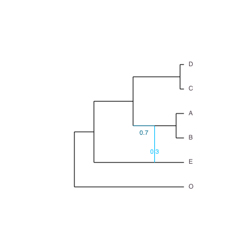
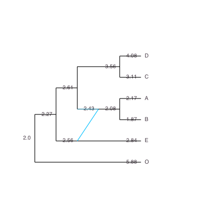
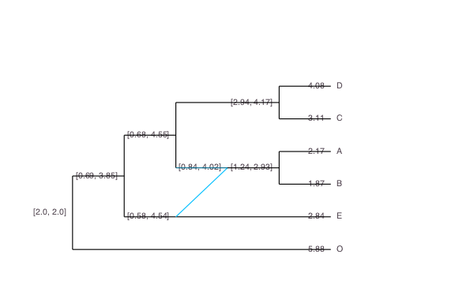
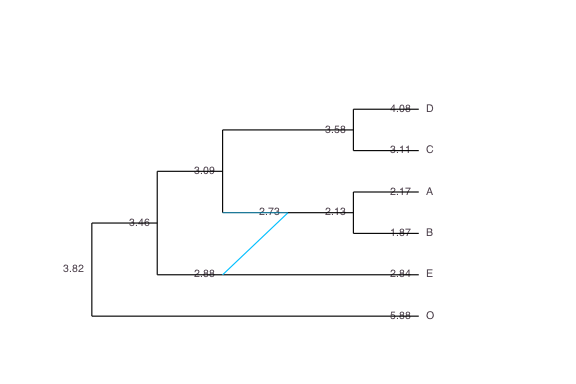
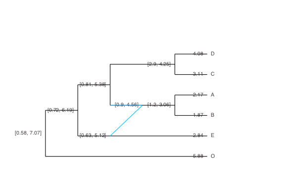
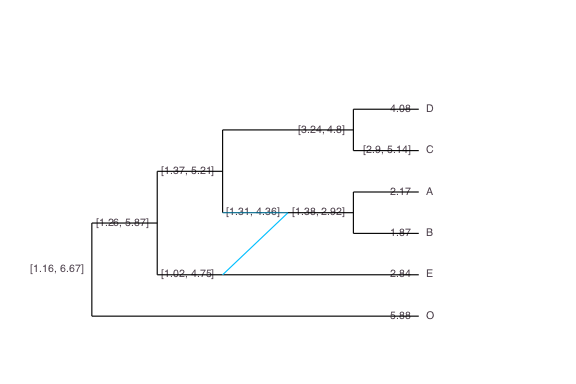
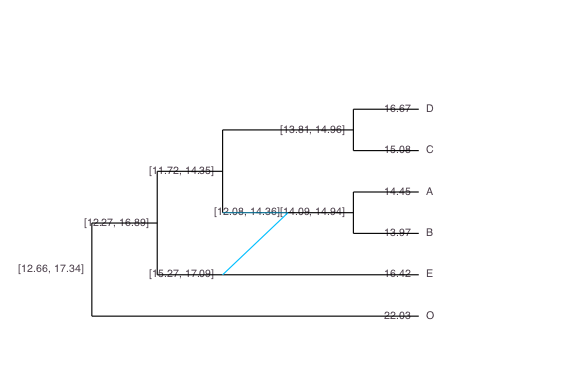

Continuous Trait Evolution
Once the network is inferred, we can take these species relationships into account when studying the distribution of quantitative traits measured for extant species. This is the goal of phylogenetic comparative methods (PCM).
We assume a fixed network, correctly rooted, with branch lengths proportional to calendar time. Here, we consider the true network that was used in the previous sections, and which is ultrametric (all the tips are contemporary).
truenet = readTopology("((((D:0.4,C:0.4):4.8,((A:0.8,B:0.8):2.2)#H1:2.2::0.7):4.0,(#H1:0::0.3,E:3.0):6.2):2.0,O:11.2);") plot(truenet, useEdgeLength=true, showGamma=true)

Trait simulation
We start by generating continuous traits to study. We simulate three traits on the network (two independent, one dependent), using a Brownian Motion (BM) model of trait evolution on the network. We start by choosing the parameters of the BM (ancestral mean and variance), by creating objects of class ParamsBM<:ParamsProcess.
params_trait1 = ParamsBM( 2, 0.5) # BM with mean 2 and variance 0.5 params_trait2 = ParamsBM(-2, 1) # BM with mean -2 and variance 1.0
We then simulate the independent traits according to these parameters, using function simulate (fixing the seed, for reproducibility).
srand(18480224) sim1 = simulate(truenet, params_trait1) # simulate a BM on truenet sim2 = simulate(truenet, params_trait2)
This creates objects of class TraitSimulation, from which we can extract the data at the tips, thanks to the method getindex(::TraitSimulation, ::Symbol).
trait1 = sim1[:Tips] # trait 1 at the tips (data) trait2 = sim2[:Tips]
This extractor creates an Array with one column, and as many lines as the number of tips there are in the phylogeny. It is sorted in the same order as the tips of the phylogeny used to simulate it. If needed, we could also extract the simulated values at the internal nodes in the tre:
sim1[:InternalNodes]
Finally, we generate the last trait correlated with trait 1 (but not trait 2), with phylogenetic noise.
srand(18700904) noise = simulate(truenet, ParamsBM(0, 0.1)) # phylogenetic residuals trait3 = 10 + 2 * trait1 + noise[:Tips] # trait to study. independent of trait2
Phylogenetic regression
Assume that we measured the three traits above, and that we wanted to study the impact of traits 1 and 2 on trait 3. To do that, we can perform a phylogenetic regression.
In order to avoid confusion, the function takes in a DataFrame, that has an extra column with the names of the tips of the network, labeled tipNames. Here, we generated the traits ourselves, so they are all in the same order.
julia> using DataFrames julia> dat = DataFrame(trait1 = trait1, trait2 = trait2, trait3 = trait3, tipNames = tipLabels(sim1)) 6×4 DataFrames.DataFrame │ Row │ trait1 │ trait2 │ trait3 │ tipNames │ ├─────┼─────────┼──────────┼─────────┼──────────┤ │ 1 │ 4.08298 │ -7.34186 │ 16.673 │ "D" │ │ 2 │ 3.10782 │ -7.45085 │ 15.0831 │ "C" │ │ 3 │ 2.17078 │ -3.32538 │ 14.4522 │ "A" │ │ 4 │ 1.87333 │ -4.26472 │ 13.9712 │ "B" │ │ 5 │ 2.8445 │ -5.96857 │ 16.417 │ "E" │ │ 6 │ 5.88204 │ -1.99388 │ 22.0269 │ "O" │
Phylogenetic regression / ANOVA is based on the GLM package, with the network as an extra argument, using funtion phyloNetworklm.
julia> fitTrait3 = phyloNetworklm(@formula(trait3 ~ trait1 + trait2), dat, truenet) DataFrames.DataFrameRegressionModel{PhyloNetworks.PhyloNetworkLinearModel,Array{Float64,2}} Formula: trait3 ~ 1 + trait1 + trait2 Model: BM Parameter(s) Estimates: Sigma2: 0.034712 Coefficients: Estimate Std.Error t value Pr(>|t|) (Intercept) 11.9564 1.15462 10.3552 0.0019 trait1 1.69111 0.183047 9.23868 0.0027 trait2 0.170664 0.155645 1.0965 0.3530 Log Likelihood: -2.9851753461 AIC: 13.9703506922
From this, we can see that the intercept, the coefficient for trait 1 and the variance of the noise are correctly estimated (given that there are only 6 taxa). In addition, the Student test for the coefficient associated with trait 2 has a high p-value, which means that this coefficient is not significantly different from 0. This is consistent with the way we simulated trait 3.
The function returns an object of type PhyloNetworkLinearModel<:LinPredModel. It is a subtype of the GLM type LinPredModel, which means that all base functions from Julia StatsBase can be applied to it. See the documentation for this type for a list of all functions that can be used. Some functions allow the user to retrieve directly the estimated parameters of the BM, and are specific to this object.
Ancestral State Reconstruction
From known parameters
If we assume that we know the exact model of evolution that generated the traits, we can do ancestral trait reconstruction. Here, we simulated trait 1 ourselves, so we can use the true process, with the true parameters. In other words, we can reconstruct the state at the internal nodes, given the values at the tips, the known value at the root and the known BM variance.
ancTrait1 = ancestralStateReconstruction(truenet, trait1, params_trait1)
Function ancestralStateReconstruction creates an object with type ReconstructedStates. Several extractors can be applied to it:
julia> expectations(ancTrait1) # predictions 13×2 DataFrames.DataFrame │ Row │ nodeNumber │ condExpectation │ ├─────┼────────────┼─────────────────┤ │ 1 │ -5 │ 3.55615 │ │ 2 │ -7 │ 2.08473 │ │ 3 │ 5 │ 2.42943 │ │ 4 │ -4 │ 2.61415 │ │ 5 │ -8 │ 2.56143 │ │ 6 │ -3 │ 2.26785 │ │ 7 │ -2 │ 2.0 │ │ 8 │ 1 │ 4.08298 │ │ 9 │ 2 │ 3.10782 │ │ 10 │ 3 │ 2.17078 │ │ 11 │ 4 │ 1.87333 │ │ 12 │ 6 │ 2.8445 │ │ 13 │ 7 │ 5.88204 │ julia> stderr(ancTrait1) # associated standard errors 7-element Array{Float64,1}: 0.312339 0.429933 0.812157 0.985996 1.00992 0.807042 0.0 julia> predint(ancTrait1) # prediction interval (default to 95%) 13×2 Array{Float64,2}: 2.94398 4.16832 1.24207 2.92738 0.837628 4.02123 0.681629 4.54666 0.582023 4.54084 0.686076 3.84962 2.0 2.0 4.08298 4.08298 3.10782 3.10782 2.17078 2.17078 1.87333 1.87333 2.8445 2.8445 5.88204 5.88204
We can plot the ancestral states or prediction intervals on the tree, using the nodeLabel argument of the plot function.
ancExpe = expectationsPlot(ancTrait1); # format expected ancestral states for the plot plot(truenet, nodeLabel = ancExpe)

ancInt = predintPlot(ancTrait1) # format the prediction intervals for the plot plot(truenet, nodeLabel = ancInt)

As we know the true ancestral states here, we can compare them to our estimation.
julia> predictions = DataFrame(infPred=predint(ancTrait1)[1:7, 1], trueValue=sim1[:InternalNodes], supPred=predint(ancTrait1)[1:7, 2]) 7×3 DataFrames.DataFrame │ Row │ infPred │ trueValue │ supPred │ ├─────┼──────────┼───────────┼─────────┤ │ 1 │ 2.94398 │ 2.74233 │ 4.16832 │ │ 2 │ 1.24207 │ 2.24355 │ 2.92738 │ │ 3 │ 0.837628 │ 1.38334 │ 4.02123 │ │ 4 │ 0.681629 │ 1.50076 │ 4.54666 │ │ 5 │ 0.582023 │ 2.84188 │ 4.54084 │ │ 6 │ 0.686076 │ 1.76745 │ 3.84962 │ │ 7 │ 2.0 │ 2.0 │ 2.0 │
From estimated parameters
In real applications though, we do not have access to the true parameters of the process that generated the data. We can estimate it using the previous function. To fit a regular BM, we just need to do a regression of trait 1 against a simple intercept:
fitTrait1 = phyloNetworklm(@formula(trait1 ~ 1), dat, truenet)
We can then apply the ancestralStateReconstruction function directly to the fitted object:
ancTrait1Approx = ancestralStateReconstruction(fitTrait1)
The prediction intervals ignore the fact that we estimated the process parameters, so they are less accurate and the function throws a warning. The output is an object of the same ReconstructedStates type as earlier, and the same extractors can be applied to it:
plot(truenet, nodeLabel = expectationsPlot(ancTrait1Approx))

For convenience, the two steps described above (fitting against the intercept, and then do ancestral state reconstruction) can be done all at once with a single call of the function ancestralStateReconstruction on a DataFrame with the trait to reconstruct, and the tip labels:
datTrait1 = DataFrame(trait1 = trait1, tipNames = tipLabels(sim1)) ancTrait1Approx = ancestralStateReconstruction(datTrait1, truenet) plot(truenet, nodeLabel = predintPlot(ancTrait1Approx))

This produces the exact same results.
Data imputation
Note that there is no theoretical difference between an internal node, for which we could not measure the value of the trait, and a missing value at a tip of the network. Consequently, the previous ancestralStateReconstruction function can be used to do data imputation. To see this, let's add some missing values in trait 1.
datTrait1[[2], :trait1] = NA # second row: for taxon C ancTrait1Approx = ancestralStateReconstruction(datTrait1, truenet) plot(truenet, nodeLabel = predintPlot(ancTrait1Approx))

In the plotting function, a prediction interval is shown for the missing values.
With known predictors
At this point, it might be tempting to apply this function to trait 3 we simulated earlier as a linear combination of trait 1 and a phylogenetic noise. However, this cannot be done directly:
ancTrait3 = ancestralStateReconstruction(fitTrait3) # Throws an error !
This is because the model we used to fit the trait (a regression with one predictor and an intercept) is not compatible with the simple model of Brownian evolution that we assumed for the ancestral state reconstruction. As the predictor used is not known for ancestral states, it is not possible to reconstruct the trait for this particular model.
The only option we have is to provide the function with the predictor's ancestral states, if they are known. They are known indeed in this toy example that we generated ourselves, so we can reconstruct our trait doing the following:
ancTrait3 = ancestralStateReconstruction(fitTrait3, [ones(7, 1) sim1[:InternalNodes] sim2[:InternalNodes]]) plot(truenet, nodeLabel = predintPlot(ancTrait3))

where we provided the ancestral predictors as a matrix, containing the intercept, and the known predictor at the nodes. The user must be very careful with this function, as no check is done for the order of the predictors, that must be in the same order as the internal nodes of the phylogeny. As ancestral predictors are often unknown, the use of this functionality is discouraged.
Phylogenetic ANOVA
As mentioned above, the phyloNetworklm function is based on the lm function from GLM. This means that it inherits from most of its features, and in particular, it can handle formulas with factors or interactions. For example, in lizards, we might want to do a regression of toe length against body length and the region where each species is found, where this region is coded into 4 categories (say). We might also want to include an interaction effect between body length and region. (This model has no biological basis. It is just meant to show the possibilities of the function).
To illustrate the use of categorical predictors of particular interest in a network with reticulations, let's assume that some heterosis took place after the hybridization event, so that tips "A" and "B" have larger mean compared to the others.
delta = 5.0; # value of heterosis underHyb = [(n == "A" || n == "B") for n in tipLabels(sim1)] # tips under hybrid underHyb
6-element Array{Bool,1}:
false
false
true
true
false
false
for i in 1:length(trait3) underHyb[i] && (trait3[i]+=delta) # add delta to tips A and B end trait3 # changed: +5 was added by the previous loop to A and B
6-element Array{Float64,1}:
16.673
15.0831
19.4522
18.9712
16.417
22.0269
The categorical variable underHyb separates tips "A" and "B" from the others. We need to mark it as a factor, not a numerical variable, i.e. as a PooledDataArray.
dat = DataFrame(trait1 = trait1, trait2 = trait2, trait3 = trait3, underHyb = underHyb, tipNames = tipLabels(sim1)) dat[:underHyb] = PooledDataArray(dat[:underHyb])
Now we can include this factor in the regression.
julia> fitTrait = phyloNetworklm(@formula(trait3 ~ trait1 + underHyb), dat, truenet) DataFrames.DataFrameRegressionModel{PhyloNetworks.PhyloNetworkLinearModel,Array{Float64,2}} Formula: trait3 ~ 1 + trait1 + underHyb Model: BM Parameter(s) Estimates: Sigma2: 0.0484988 Coefficients: Estimate Std.Error t value Pr(>|t|) (Intercept) 11.0616 1.19414 9.26324 0.0027 trait1 1.72504 0.240787 7.16418 0.0056 underHyb: true 5.07354 0.837326 6.05922 0.0090 Log Likelihood: -3.9885372687 AIC: 15.9770745374
In this case, the categorical variable indicating which tips are descendants of the reticulation event is indeed relevant, and the heterosis effect is recovered.
This is a very simple example of how to include heterosis, but some general functions to test for it, on networks with more than on hybrid, are also available.
Pagel's Lambda
One classical question about trait evolution is the amount of "phylogenetic signal" in a dataset, that is, the importance of the tree structure to explain variation in the observed traits. One way of doing measuring that is to use Pagel's lambda1 transformation of the branch lengths. This model assumes a BM on a tree where the internal branches are multiplied by a factor λ, while the external branches are modified so that the total height of the tree is constant. Hence, λ varies between 0 (the tree has no influence on the data) and 1 (the tree is unchanged). Using the same branch length transformations, this model can be straightforwardly extended to phylogenetic networks.
We can illustrate this with the predictor trait we used earlier. We use the same function as before, only indicating the model we want to use:
fitPagel = phyloNetworklm(@formula(trait1 ~ 1), dat, truenet, model="lambda")
As it is indeed generated according to a plain BM on the phylogeny, the estimated λ should be close to 1. It can be extracted with function lambda_estim:
julia> lambda_estim(fitPagel) 0.9073561228997261
-
Pagel M (1999). Inferring the historical patterns of biological evolution. Nature. 401: 877–884. doi:10.1038/44766 ↩